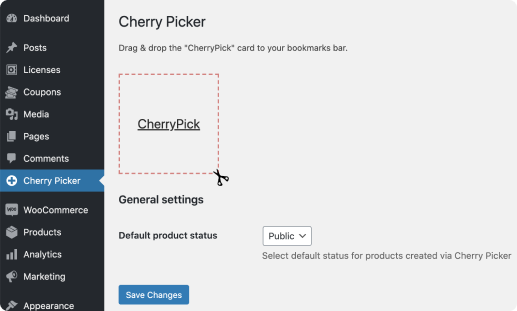

<section class="main">
    <div class="container">
        <h1 class="main-header">Caaspi tools</h1>
        <div class="main-content">
            <div class="main-picture">
                
            </div>
            <div class="main-text">
                <h3>Cherry Picker</h3>
                <p>
                    Add products to your WooCommerce website while surfing through popular online stores.
                </p>
                <p>
                    Cherry Picker will import all the product details, including the title, price, description, category, images gallery, thus saving you hours of content work.
                </p>
                <a href="#" class="btn">Learn More</a>
            </div>
        </div>
    </div>
</section>

